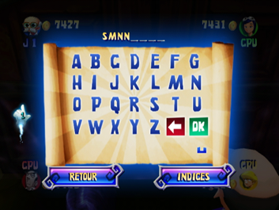

11 |
Indices, parchemins et course finale |
 |
Ecran d'achat de parchemin Chaque fois que la voiture passe sur une case Parchemin magique, vous avez la possibilité d'en acheter un. Si vous décidez d'acheter un parchemin, vous obtiendrez un indice. Si vous choisissez de ne pas acheter de parchemin, le suivant apparaîtra à un autre endroit et la voiture continuera d'avancer. Chaque parchemin que vous achetez est plus cher que le précédent :
Ecran du nouvel indice Vous pouvez consulter cet écran et voir un nouvel indice après avoir acheté un parchemin. Ecran des indices Cet écran suit l'écran du nouvel indice. Vous pouvez y consulter tous les indices recueillis jusque là et choisir de proposer un mot de passe, de continuer à jouer ou de réinitialiser les indices et le mot de passe et de continuer. Il vous en coûtera 200 pièces pour réinitialiser les indices et le mot de passe. Mais attention ! Si vous n'avez pas suffisamment de pièces, vous devrez proposer une réponse ! Essayez de deviner ou continuez à jouer pour accumuler plus d’argent. Ecran du mot de passe  Si vous sélectionnez Réponse sur l'écran des indices, vous serez automatiquement dirigé vers l'écran du mot de passe. Vous pourrez alors choisir de rentrer le mot de passe ou de retourner au plateau de jeu et de continuer à jouer. Sélectionnez Indices pour voir vos indices. Ecran Mot de passe erroné Si vous entrez un mauvais mot de passe, un autre parchemin magique apparaîtra ailleurs dans le manoir et vous perdrez 200 pièces. Mais si vous avez déjà 5 parchemins, vous devrez essayer d'entrer un nouveau mot de passe ou réinitialiser les indices et le mot de passe (une action qui vous coûtera 200 pièces). Ecran de félicitations Si vous entrez le bon mot de passe, un écran de félicitations apparaîtra, ainsi qu'un dernier mini-jeu. Course finale Après avoir trouvé le trésor, les quatre joueurs doivent jouer à un ultime mini-jeu, la course finale, qui ressemble beaucoup au mini-jeu Courez ! Courez ! (voir la section Mini-jeux pour plus d'informations). Les deux jeux se jouent avec la manette Wii Remote tenue à l'horizontale et le joueur peut appuyer sur le bouton 2 pour réaliser une attaque tournoyante. Il existe tout de même un certain nombre de différences entre les deux mini-jeux, dont notamment la carte du jeu. D'autres détails importants qui différencient la course finale du jeu Courez ! Courez ! : 1) si un fantôme touche un joueur, celui-ci perd des pièces mais n'est pas éliminé; 2) les chevaliers attaquent les joueurs, et ceux-ci peuvent perdre des pièces s'ils sont touchés; 3) le score de départ des joueurs pour ce mini-jeu correspond au montant total accumulé dans le jeu jusque là. |
 |
 |
 |